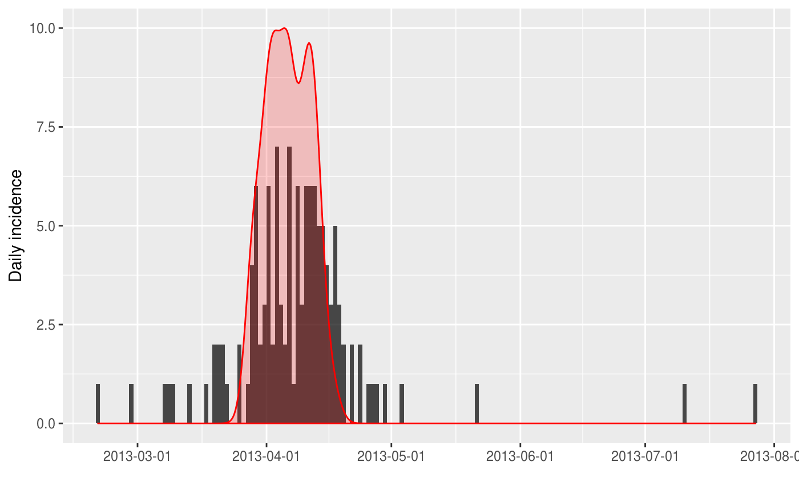
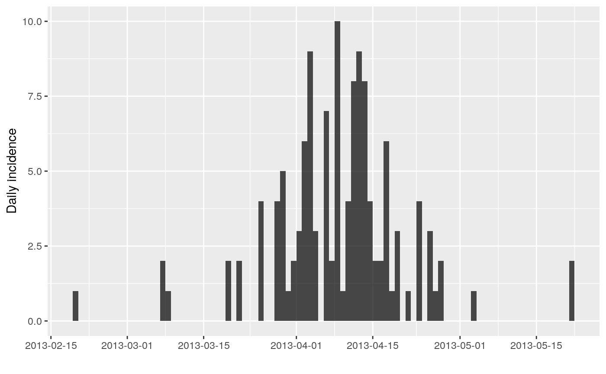

bootstrap.RdThis function can be used to bootstrap incidence objects. Bootstrapping is
done by sampling with replacement the original input dates. See details for
more information on how this is implemented.
bootstrap(x, randomise_groups = FALSE)
| x | An |
|---|---|
| randomise_groups | A |
An incidence object.
As original data are not stored in incidence objects, the
bootstrapping is achieved by multinomial sampling of date bins weighted by
their relative incidence.
incidence::find_peak to use estimate peak date using bootstrap
if (require(outbreaks) && require(ggplot2)) { withAutoprint({ i <- incidence(fluH7N9_china_2013$date_of_onset) i plot(i) ## one simple bootstrap x <- bootstrap(i) x plot(x) })}#>#>#> > i <- incidence(fluH7N9_china_2013$date_of_onset) #> > i #> <incidence object> #> [126 cases from days 2013-02-19 to 2013-07-27] #> #> $counts: matrix with 159 rows and 1 columns #> $n: 126 cases in total #> $dates: 159 dates marking the left-side of bins #> $interval: 1 day #> $timespan: 159 days #> $cumulative: FALSE #> #> > plot(i)#> > x <- bootstrap(i) #> > x #> <incidence object> #> [126 cases from days 2013-02-19 to 2013-07-27] #> #> $counts: matrix with 159 rows and 1 columns #> $n: 126 cases in total #> $dates: 159 dates marking the left-side of bins #> $interval: 1 day #> $timespan: 159 days #> $cumulative: FALSE #> #> > plot(x)